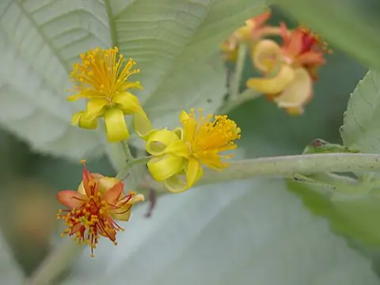

Drinks & juices · Popular in Northern plains and Thar and dry northwest
Phalsa sharbat
Phalsa sharbat is made with wild phalsa, a favourite in Northern plains and Thar and dry northwest.

How do you make phalsa sharbat?
Mash ripe berries in water, strain out the seeds, then add sugar, black salt and roasted cumin.
Wild ingredients
- Wild phalsa (Grewia): in season May to June
Watch the recipe

Video: NishaMadhulika on YouTube